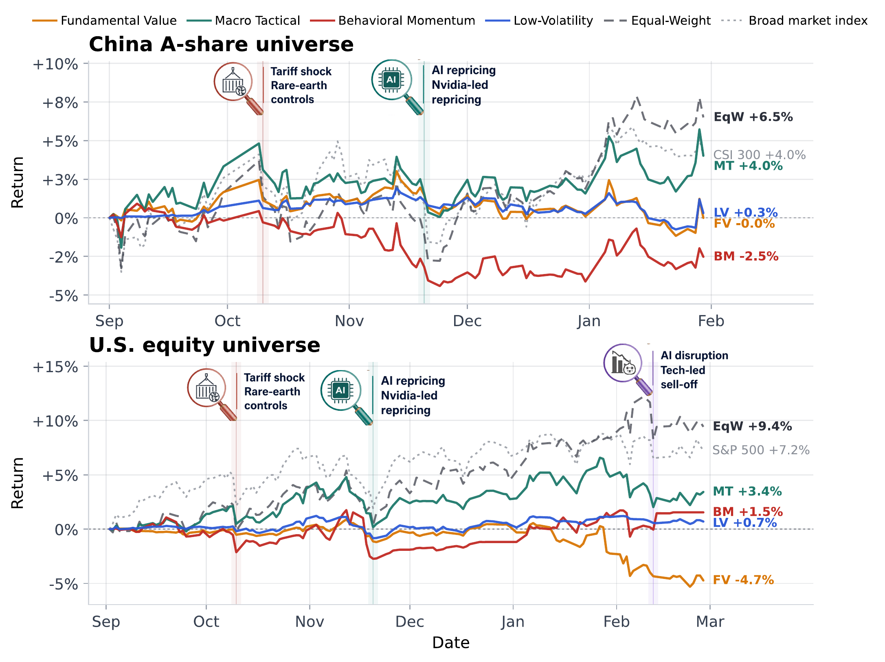
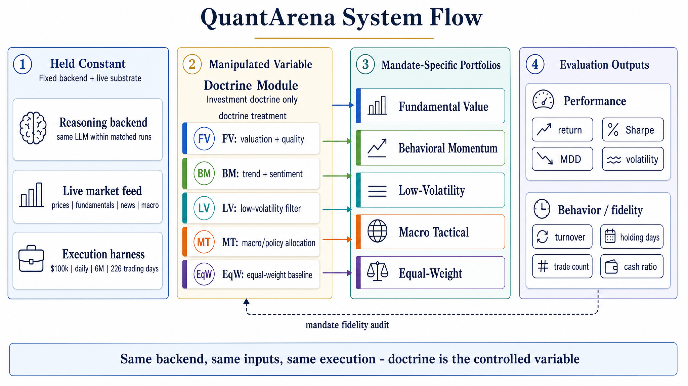
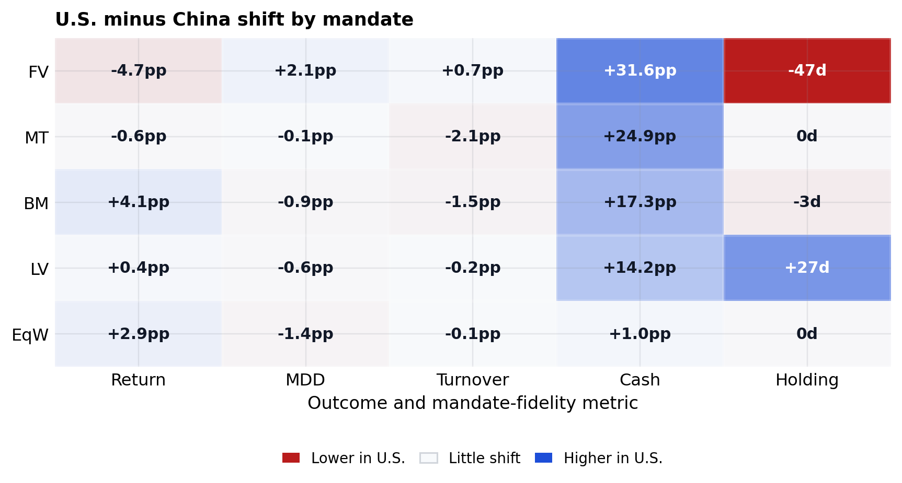
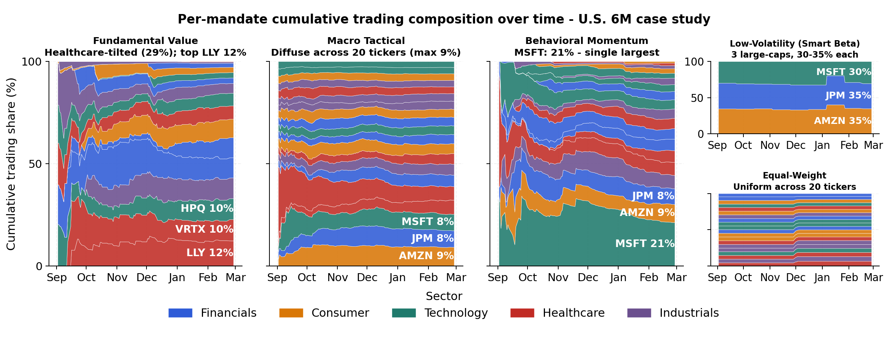
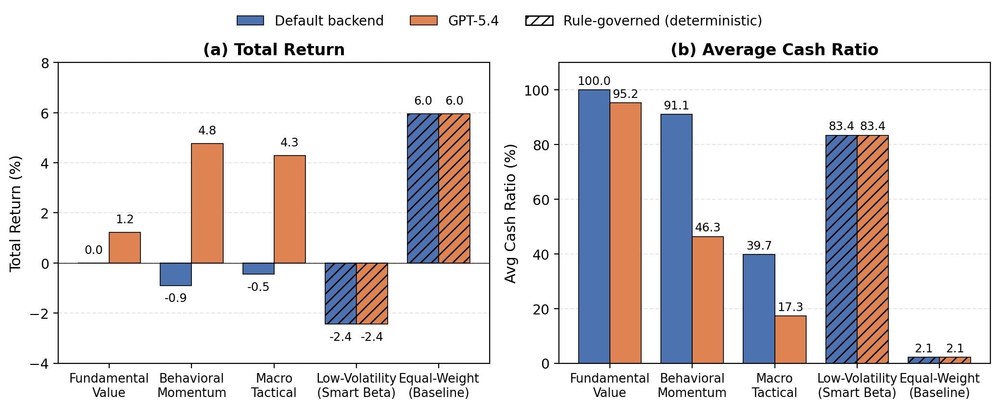
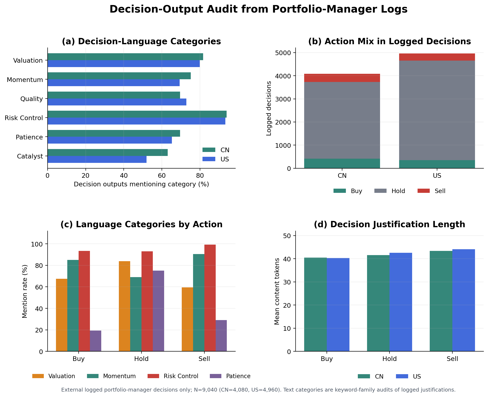

Fundamental Value
Valuation-first equity selection with quality and threshold discipline.
Policy-conditioned live-market evaluation
Benchmark the policy layer, not just the model.
A controlled research toolkit for testing how executable investment doctrines change LLM-assisted trading behavior when the backend, market data, analyst workflow, capital, accounting, and execution harness are held fixed.

Method
QuantArena treats the investment mandate as the intervention. Each mandate changes evidence routing, signal activation, risk budgets, turnover discipline, and rebalance behavior while sharing the same data and execution substrate.

Valuation-first equity selection with quality and threshold discipline.
Top-down regime and policy allocation across style sleeves.
Trend and sentiment priority with short-horizon risk guardrails.
Defensive smart-beta allocation with volatility and tracking controls.
Deterministic scheduled rebalancing as the within-protocol reference.
Results
Equal-Weight leads both matched windows; Macro Tactical is the closest active mandate. The active profiles remain separable in cash usage, turnover, holding period, and portfolio construction.




Artifact
The release exposes a small runtime surface for smoke checks, artifact validation, backtesting, policy profiles, and focused tests.
quantarena/CLI and artifact validationbacktest/metrics, mandate engines, reportsdeepfund/profiles, provider routing, executiondeepear/intelligence workflow componentstests/unit and regression coverageQuickstart
git clone https://github.com/Dominic789654/quantarena-clean.git
cd quantarena-clean
python -m venv .venv
source .venv/bin/activate
pip install -e ".[dev]"
python -m quantarena.cli smoke --jsonQuantArena is for academic study and controlled evaluation. It is not financial advice, portfolio management advice, or a recommendation to trade.